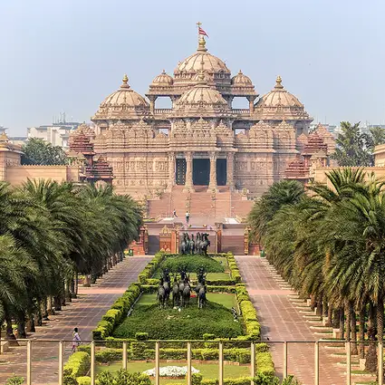

🌆 Modern Metropolis - Delhi is officially known as the National Capital Territory (NCT) and includes both Old and New Delhi. - It’s one of the most populous urban areas in the world, with an estimated 34 million people in the metro area by 2025. - The city is a hub for government, commerce, education, and culture, hosting Parliament, Rashtrapati Bhavan, and countless universities and museums.
🌍 Cultural Diversity - Delhi is a melting pot of languages, religions, and cuisines. You’ll find Hindi, English, Punjabi, and Urdu widely spoken. - Festivals like Diwali, Eid, Holi, and Christmas are celebrated with equal fervor, reflecting its pluralistic spirit.
🌳 Green Spaces & Urban Life - Despite its hustle, Delhi offers serene escapes like Lodhi Gardens, India Gate lawns, and the Lotus Temple. - The Delhi Metro is one of the most efficient rapid transit systems in Asia, connecting nearly every corner of the city.

home page